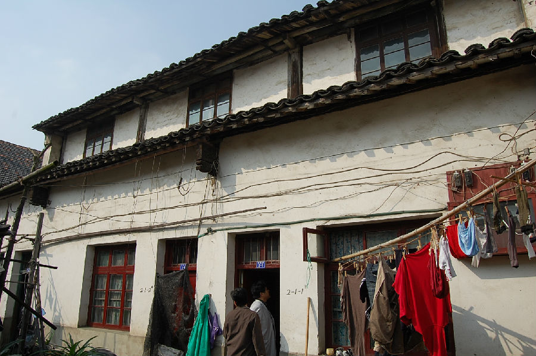

嘉兴市文物保护网 · 市级文物保护点 · 2020-11-03 · 原文

圣堂弄蔡氏老宅位于嘉兴市秀洲区新塍镇圣堂弄2号、6号。据内部梁架结构和房主介绍，综合推断为明代建筑。老宅坐北朝南，原规模很大有四进，第一进和第四进已毁。西侧有“西厅”，还有十三口井。现存的两进为“东厅”的一部分，第二进归房管所，第三进为蔡家后人所居住。占地面积377平方米，通面阔15.47米，通进深24.37米。第二、三进均为三开间二层楼房，屋顶铺设望砖和望板，抬梁和穿枋式并用，五檩，有方形斗拱。第二进做工考究，月梁、坊上均雕有花草、铜钱等图案，底层高4.17米，二层高4.51米；第三进雕工较朴素，垫梁饰有仙鹤和祥云，梁坊上雕有简洁的花草纹案，脊桁上有镶金字“福、撰、吴、照、寿”五字，二层的落地长窗花纹简朴，底层高4.75米，二层高4.21米。老宅建筑宏伟，历史悠久，建筑用料较大，雕花考究，对研究明清时期的建筑提供实证，具有较高的历史、科学和艺术价值。2009年公布为嘉兴市文物保护点。